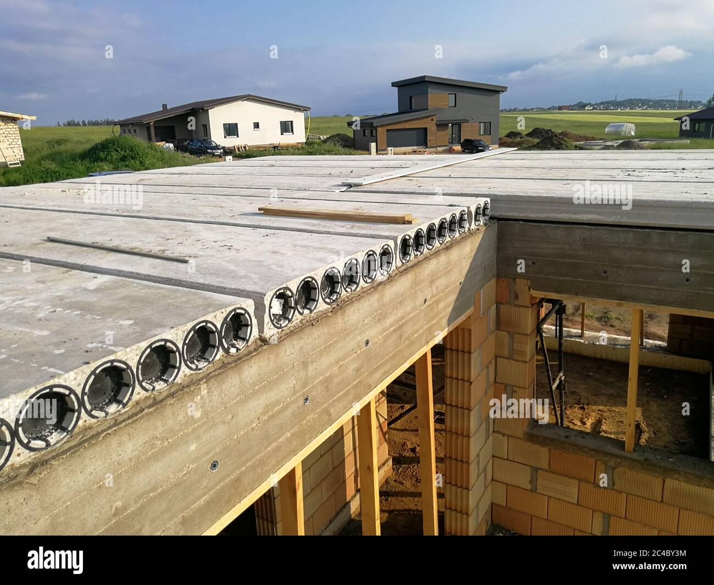

Hollow-Core Slab
 It’s a form of the precast slab with cores running through it. These cores reduce slab self-weight and improve structural efficiency, serving as service ducts. It’s ideal for situations where the quick building is required. The span of the hollow core slab units is unrestricted, and their normal width is 120mm, with depths ranging from 110mm to 400mm. Cranes are typically used to place slab units between beams, and the gaps between units are filled with screeds. Over a 16-meter span, a hollow core slab has been found to hold 2.5 kN/m2. It’s ideal for office, retail, and parking-lot buildings.
Uses of Hollow-Core Slab
Using a hollow-core ribbed slab decreases construction expenses and the structure’s overall weight.Because of its thickness, a hollow core slab provides excellent fire resistance and sound insulation.
It removes the requirement for electrical and plumbing units to be drilled into slabs.
Advantages of Hollow-Core Slab:
The Hollow base ribbed plate not only reduces building costs, It also reduces the overall weight of the structure.Making installation easier and requiring less effort.
Because of its Densities, the hollow core slab also has great fire resistance and sound insulation.
It eliminates the requirement for electrical and plumbing unit plates to be drilled.
It also eliminates supplementary formwork or special construction tools to reinforce the blank block masonry.
Disadvantages of Hollow-Core Slab:
The precast modules must be lifted and moved, which necessitates specific equipment.During transportation, the hollow core ribbed slab modules are also harmed.
Supplying adequate connections between the prefabricated parts becomes difficult.
For small spans, it’s not cost-effective.
It will be difficult to restore and fortify.